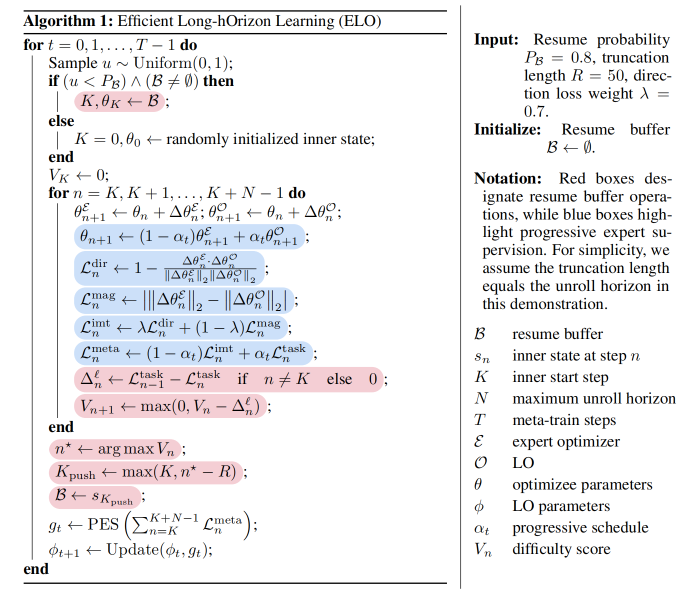
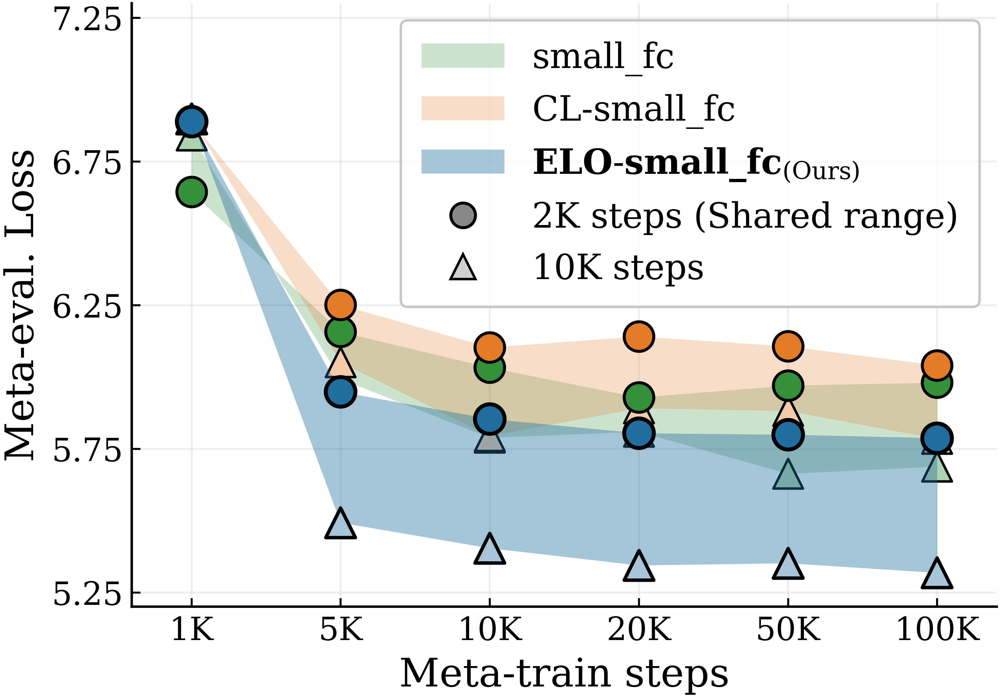
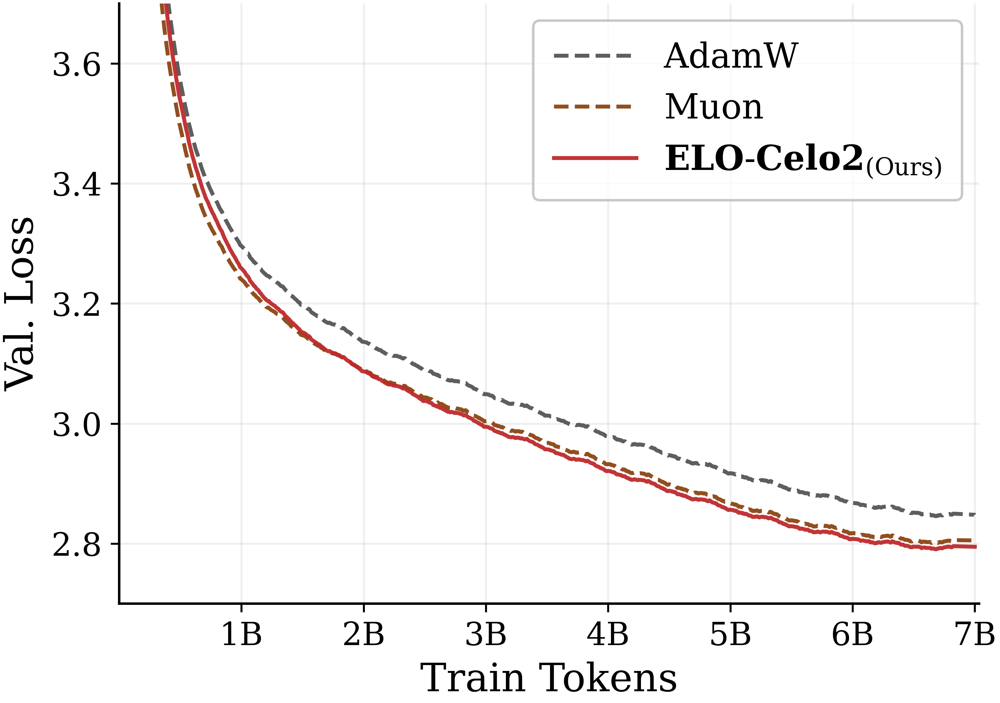
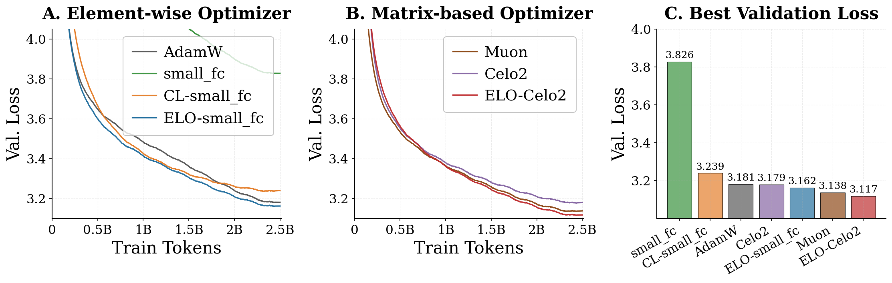

Key Features
Failure-aware resume buffer
Reallocates redundant meta-training compute toward longer failure regimes, scaling learned-optimizer meta-training to long inner problems.
Progressive teacher forcing
Enforces decoupled progressive expert supervision, providing stable meta-learning signals that additionally lead to generalizable LOs.
Outperforms hand-designed optimizers
ELO-Celo2 outperforms well-tuned AdamW across all benchmarks and remains competitive with Muon on language modeling.
Cheap to meta-train
Every ELO-LO is trained in under 7 GPU-hours.

Experiments
Meta-Training Efficiency
Given a fixed compute budget, ELO improves meta-training convergence, especially at unroll lengths beyond the meta-training inner horizon.

Out-of-Distribution Generalization
Meta-trained only on 4 tiny vision-MLP tasks, ELO-LOs transfer far outside their meta-training distribution, with ELO-Celo2 outperforming other learned baselines and AdamW across FineWeb pretraining and vision classification tasks, and remaining competitive with Muon on GPT-2 (124M/350M) language modeling.


Evaluation on ImageNet Benchmarks
| Method | ResNet-50 | ViT-B/16 | Avg. | ||||
|---|---|---|---|---|---|---|---|
| IN-1K | IN-Real | IN-V2 | IN-1K | IN-Real | IN-V2 | ||
| AdamW | 75.88 | 82.19 | 63.40 | 74.16 | 80.87 | 61.39 | 72.98 |
| small_fc | 65.36 | 73.70 | 53.43 | 31.77 | 36.70 | 25.57 | 47.75 |
| CL-small_fc | 72.25 | 79.53 | 59.93 | 67.46 | 74.74 | 54.94 | 68.14 |
| Celo2 | 74.04 | 80.91 | 61.93 | 74.97 | 81.10 | 62.02 | 72.50 |
| ELO-small_fc (Ours) | 73.92 | 81.00 | 62.11 | 75.18 | 81.70 | 61.98 | 72.65 |
| ELO-Celo2 (Ours) | 76.29 | 82.93 | 64.29 | 76.33 | 82.21 | 63.10 | 74.19 |
Best top1-validation accuracy on ImageNet-1K validation, ImageNet-ReaL, and ImageNet-V2 for ResNet-50 and ViT-B/16 trained from scratch. Each method is trained on ImageNet-1K at 224x224 resolution for 50K steps with batch size 2048. The best value in each column is in bold.
Usage in PyTorch
ELO optimizers ship in PyLO with CUDA-accelerated kernels. Install from source:
git clone https://github.com/Belilovsky-Lab/pylo
cd pylo
pip install -r requirements.txt --extra-index-url https://download.pytorch.org/whl/cu118
PYLO_CUDA=1 pip install --no-build-isolation .
python -m pylo.util.patch_mupDrop ELO_CELO2_CUDA into a standard training loop like any other PyTorch optimizer:
import torch
from pylo.optim import ELO_CELO2_CUDA
model = torch.nn.Linear(10, 2)
num_steps = 1000
optimizer = ELO_CELO2_CUDA(model.parameters(), lr=3.16e-4, weight_decay=0.1, adam_lr_mult=20)
scheduler = torch.optim.lr_scheduler.CosineAnnealingLR(optimizer, T_max=num_steps, eta_min=3.16e-5)
for step in range(num_steps):
optimizer.zero_grad()
loss = loss_fn(model(input), target)
loss.backward()
optimizer.step()
scheduler.step()Citation
If you use ELO in your research, please cite our paper:
@article{huang2026efficient,
title={Efficient Long-Horizon Learning for Learned Optimization},
author={Huang, Xiaolong and Th{\'e}rien, Benjamin and Harrison, James and Belilovsky, Eugene},
journal={arXiv preprint arXiv:2607.06772},
year={2026}
}